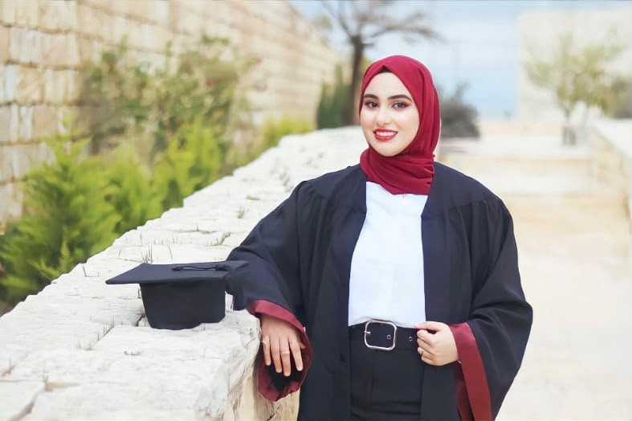

Biography

My name is Baraa Darraj. I am a Computer Science student at Birzeit University, My student ID is 1230667.I live in Ramallah,Palestine.
Education
University Education
[2023-2027] I am currently studying for a Bachelor's degree in Computer Science at Birzeit University in Palestine. I expect to graduate in 2027.
School Education
[2021-2023] I completed my high school education at Nour Al-Huda School.
Training
I have completed several training courses that have helped me develop my programming and problem-solving skills. These include a beginner-level problem-solving course and an intensive Ramadan course in computer science fundamentals, which included ten hours of training. These courses have contributed to strengthening my understanding of computer science fundamentals and improving my problem-solving skills.
- Beginner Level of the Problem Solving Course
- Ramadan CS Fundamentals Bootcamp - 10 Hours of Training
Employment or Internship
I have never held a formal job or completed an internship. However, I am currently developing my practical and technical skills through my university studies and academic projects. I also plan to complete a practical internship during my first semester to gain professional experience and apply my knowledge in a real work environment.
Community and Voluntary Works
I have participated in community and cooperative activities at the university. For example, I helped organize the university graduation ceremony, and I participated in cooperative activities organized by the university.
Awards and Distinctions
I have not received any official awards or honors so far.
My Study Timetable
| Day | 09:00 - 10:00 | 10:00 - 11:00 | 11:00 - 12:00 | 12:00 - 13:00 | Sunday |
|---|---|---|---|---|
| Monday | COMP334 | CULS332 | ENCS3320 | GEOG210 |
| Tuesday | COMP334 | CULS332 | ENCS3320 | |
| Wednesday | COMP334 | CULS332 | ENCS3320 | |
| Thursday | COMP334 | CULS332 | ENCS3320 |